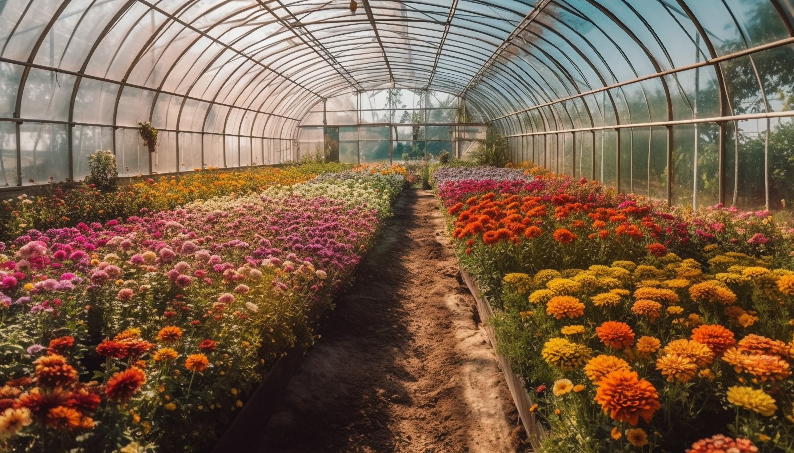
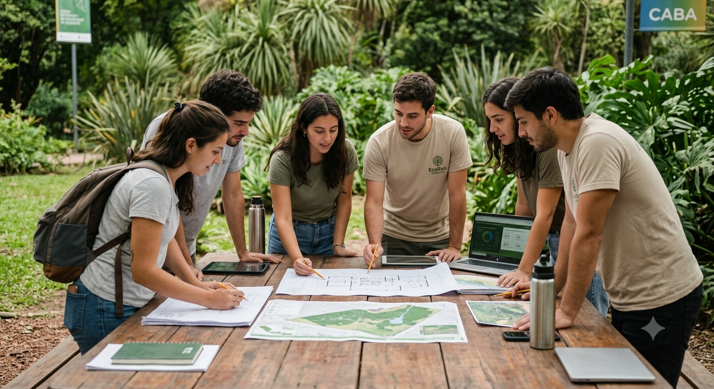
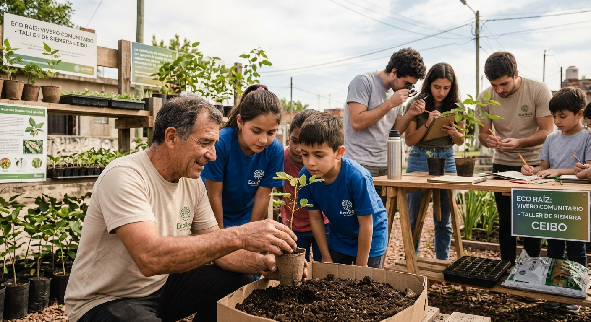
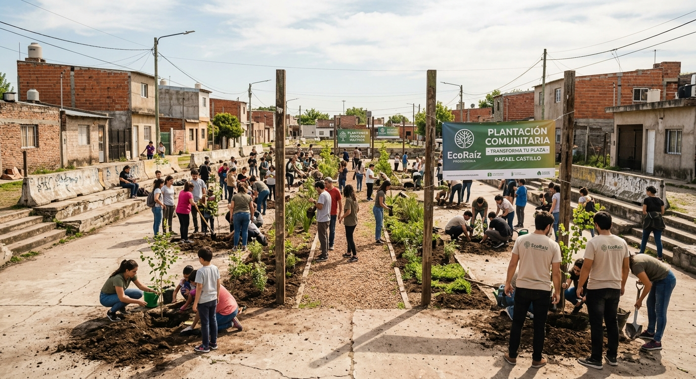
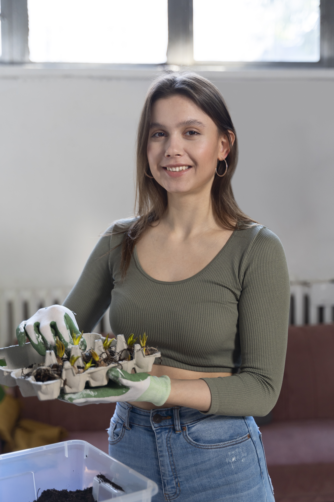
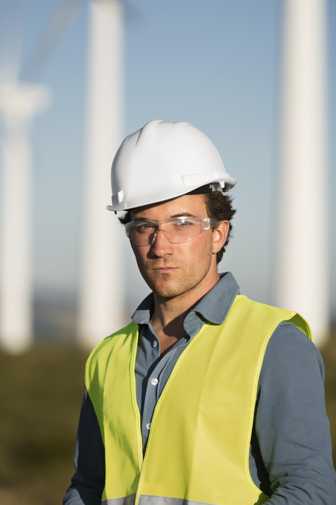
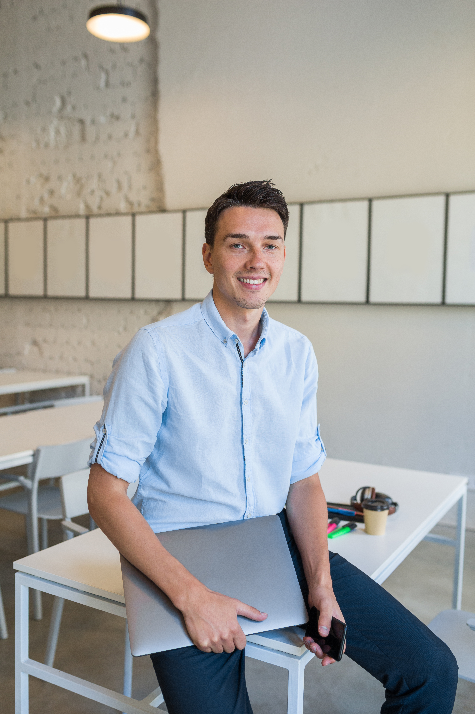

Director General
Mateo Benítez
Coordinación estratégica y desarrollo de alianzas institucionales para el impacto ambiental.
Conoce la raíz de nuestro movimiento y hacia dónde dirigimos nuestros esfuerzos para transformar el futuro ambiental.
EcoRaíz nació en el barro, impulsada por un pequeño grupo de estudiantes que se negaba a aceptar la degradación de los espacios verdes locales. Con más voluntad que recursos, organizamos las primeras jornadas de limpieza comunitaria.


Nos estructuramos formalmente y extendimos nuestros programas educativos a escuelas técnicas. Logramos nuestras primeras alianzas con municipios para la creación de corredores biológicos urbanos urbanos.

Lanzamos nuestra plataforma de voluntariado y el bootcamp de promotores ambientales. Hoy automatizamos y mapeamos cada árbol plantado, creando una red de impacto real y transparente conectada con la tecnología.
Cada recurso, donación y hora de voluntariado se registra de forma abierta. La confianza de nuestra comunidad es nuestra prioridad número uno.

No solo plantamos árboles, sembramos conocimiento. Llevamos talleres experimentales a las escuelas porque el cambio cultural nace en las aulas.

Trabajamos codo a codo con los vecinos en el territorio. Estudiamos las necesidades biológicas de cada barrio para dar soluciones eficientes.

Coordinación estratégica y desarrollo de alianzas institucionales para el impacto ambiental.

Dirección de proyectos de conservación biológica y restauración de ecosistemas nativos.

Ingeniero a cargo del diseño y supervisión técnica de los sistemas de energía solar.
Desarrollo pedagógico de talleres escolares y capacitación comunitaria sostenible.

Encargado de la infraestructura digital, plataformas de datos y optimización de la web.
Gestión de redes sociales, difusión de campañas y relaciones con la comunidad.
Procesamiento de métricas ambientales y modelado de impacto para certificar los resultados de cada programa.
Diseño de interfaces e investigación de usuarios para garantizar plataformas digitales intuitivas y accesibles.
Sumate como voluntario, difundí nuestras campañas o participá en nuestras actividades locales.
Quiero sumarme